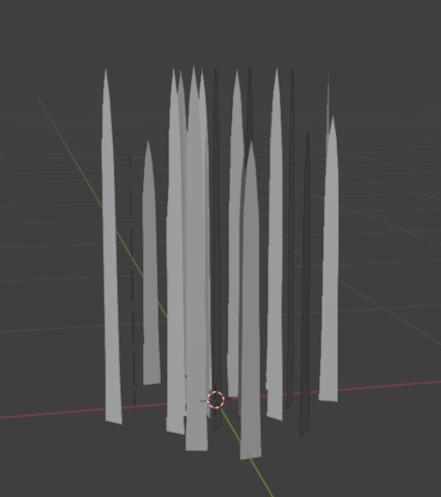
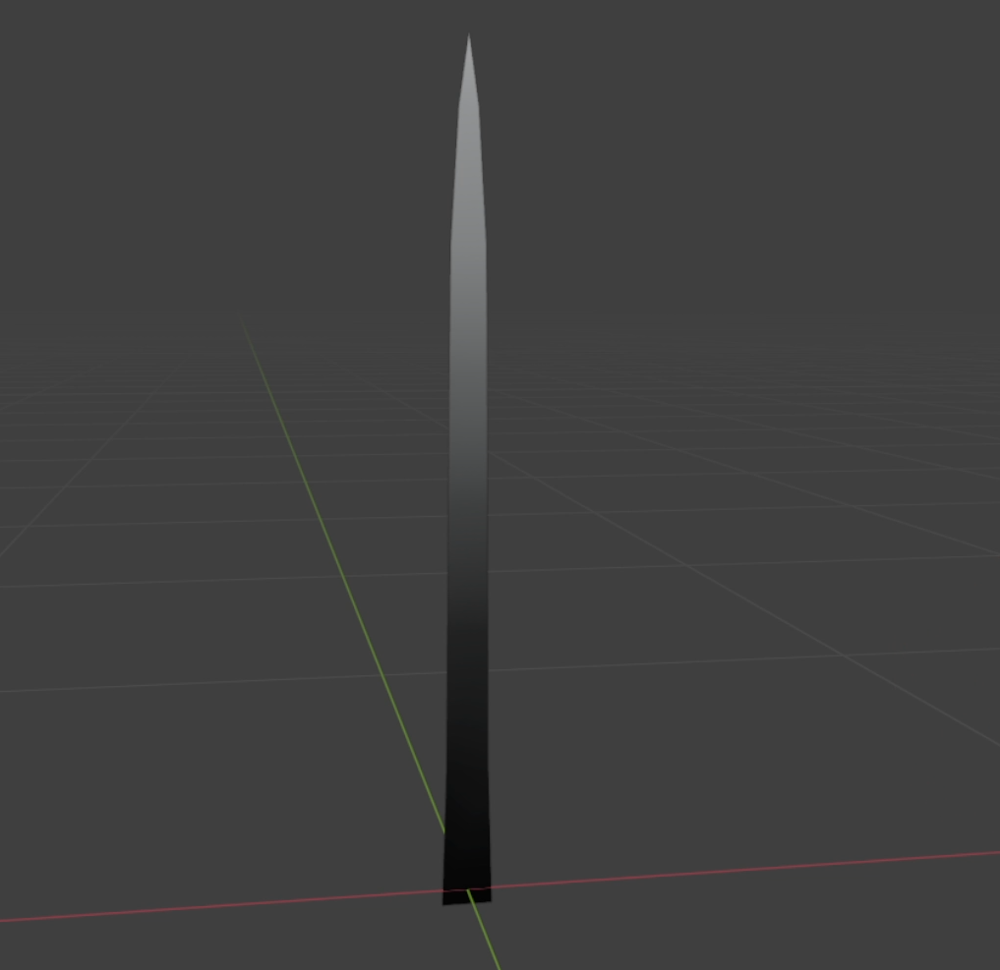
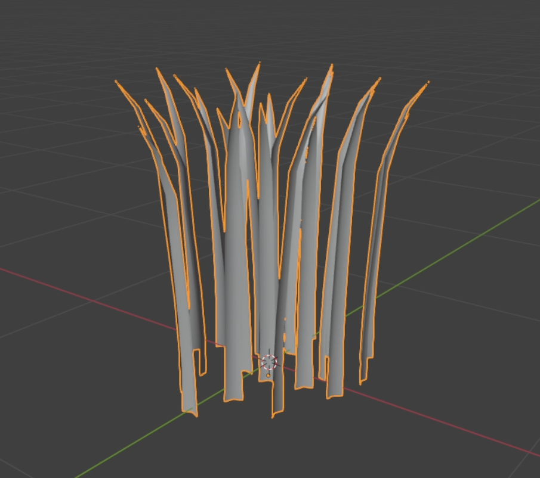

The idea behind this project was to learn how to do a vast, dense and fluid grass system that could fill in a landscape and make it feel soft, fluffy and alive but soothing and calm.
The Initial Steps
The software of choice for this project was Unreal Engine 5 and I got started with learning the landscape, grass and material systems of the engine.
I made some quick grass blades assets in Blender and then connected the grass system to the landscape, letting me instantiate grass automatically in the landscape layers of choice and making the grass receive the base color of the layer it was on.
The systems worked, however, the results were very far away from satisfying. But it was a starting point.
The Grass Clump
The next step was to work on the grass assets themselves. I created in Blender a grass clump that would contain around 20 grass blades each, making them taller and more grass shape, although I did make them with no curvature. I also created 2 LOD levels that would help with performance.
I made the normals of the grass blades look straight up, giving them a more cellshading look and implemented a basic wind system that allowed me to easily control the intensity and angle of the wind.
The problem I faced was that when the intensity was too high the grass blades would almost lay flat on the ground, and I wanted a more natural bending to their animation.

Vertex Paint
The next step was to add vertex painting to the individual grass blades, making the values 0 at the bottom and interpolating them to 1 on the end of the blade. I then made it so the wind influence would be affected by the vertex paint values, having 0 influence at the bottom of the blades and the strongest influence at the end.
This showed better results and the movement was looking more natural.

The Night Setting
I then worked on making the setting a night sky and worked on a cell shader.
The overall look of the field was coming togheter, but there were changes that could be made.
Better Grass Clumps
The blades on the current grass clumps were too straight and made it so the wind animation would break at hight wind intensities. The blades would also be invisible when viewed from the side, which would mean the grass field would lose density and cohesion when looking from different angles and during the wind animation. The vertical normals also made it so it was difficult to dintinguish the grass blades from one another unless they were under high intensity light sources.
I worked on new grass clumps that had a curvature to the blades, not only vertically but also when viewed from the sides, giving a better density to the field and also distinction between the blades, making it easier to see the clumps oscillating with the wind. I also pointed the normals facing perpendicular to the faces, making it so the grass blades would be shaded according to the lighting sources correctly. It did lose the more 2D look, but made it so they were more perceivable and their movement more readable.

Final Result
The result of this project was a vast and dense grass field, akin to a wavy sea, that looks fluffy and alive.
In the performance department, I monitored the project during the whole production. With my laptop (RTX 2060) I could run in-editor the project around 144 fps. There were still more performance aspects to tackle, but for the project it was I was content.
I did learn a lot during the making of this and have a better understanding how to work on instanciation and materials to achieve a good performance and a nice look to the future games I will work on.
The Future
For next iteriations of grass fields I might add to my projects, I want to see if I would be able to create my own particle system to instantiate the grass blades on the landscape. This would allow me for more control of the look and performance of the grass field.
I would also like to use a better method of creating the grass blades, akin to Ghost of Tsushima, were the blades would be a single mesh, instead of a clump, and would make use of bezier curves for the wind animation, making it look more natural.
Material References
Rendering Millions of Grass Blades Using UE and Niagara